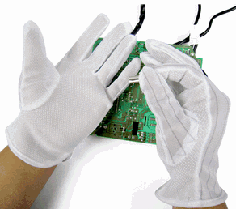
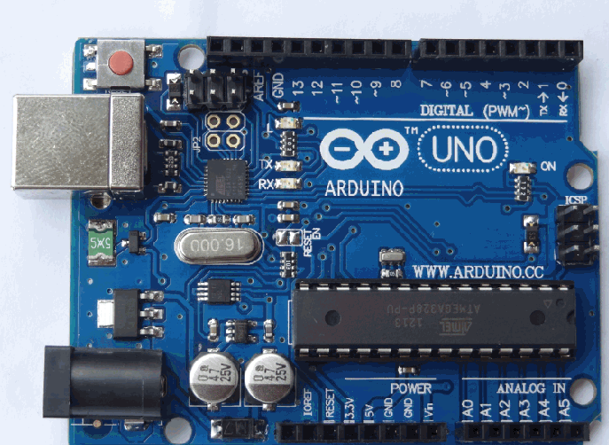
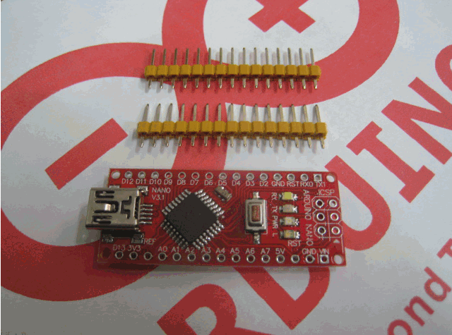
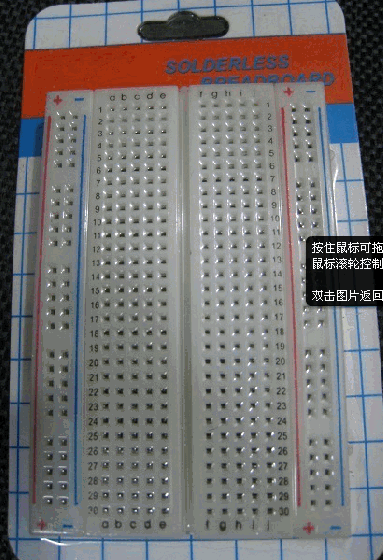
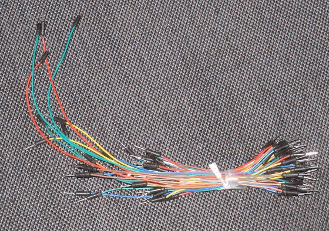
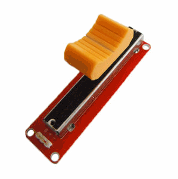
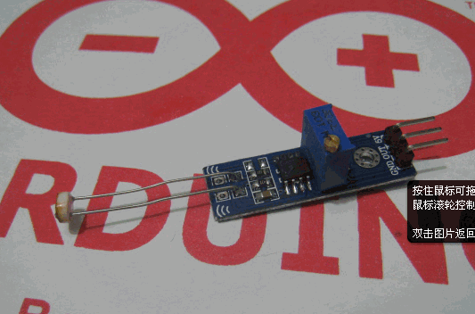
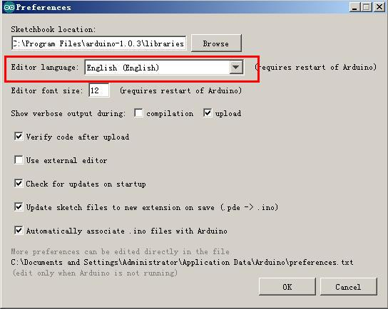

制作scratch感应板的方法
#1 制作scratch感应板的方法 作者：有志青年 发表时间：2013-3-5 17:59:05
从网上搜集了一堆文章，认真学习后在亲自尝试制作中。
刚刚接触scratch的使用者，可能软件编程还没有吃透，那么这个硬件设备的制作可以先缓一缓再尝试。
所谓的感应板，就是通过arduino单片机加上各种传感器来获取现实世界中的数据，例如当前的光线强度，声音的高低，甚至某个物体的倾斜程度，湿度……依据这些数据的不一样，程序中的角色完成不一样的项目内容。
目前可以实现的最强应用是类似物联网的尝试，a地有一感应板，获取了某个数据，通过英特网传输给远端的电脑，scratch根据不同的获取值来完成不一样的动作，例如开门。（因为scratch软件可以控制乐高的一款马达）
下面慢慢说说我是如何制作感应板的，仅仅是尝试，我没有学过单片机哟，可能一些描述还不到位。有机会要跟大学生们学习学习。
#2 硬件和软件的准备 作者：有志青年 发表时间：2013-3-6 16:19:27
硬件准备【淘宝均有销售】：
1、防静电手套

2、Arduino UNO R3单片机

这东东其实不大，一开始我想小一些买了Arduino NANO 的板子，结果很麻烦，先看Arduino NANO 的图

看到没，那些排线需要一个个自己焊到对应的孔里去
3、面包板

关于面包板，看着那么多孔，哪些孔是相互连通的不学习还真不会用
4、面包板线

5、直滑电位器，这东西淘宝不好找哟，貌似就一家，滑竿电阻、电位器等关键词都不是想要的东东

6、光线传感器、倾斜传感器……各种传感器按需准备

软件准备

将红色框中的下拉菜单中选择我们熟悉的母语，简体中文。然后点OK，确定后，关闭arduino IDE，重新启动arduino IDE，大家就能看到熟悉的母语啦。关于arduino IDE 的简单实用配置就到这里结束啦，如果您想研究更多的关于arduino IDE，请在网上搜索相关教程。
［此帖子已被 有志青年 在 2013-3-6 16:28:09 编辑过］